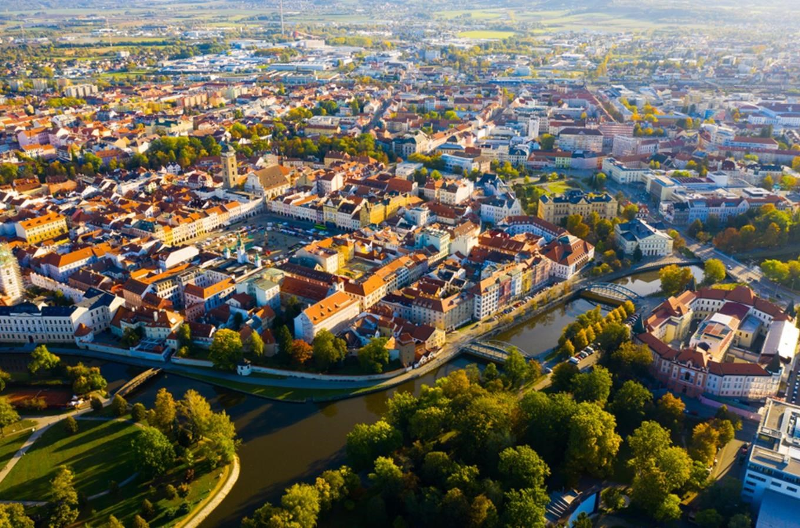
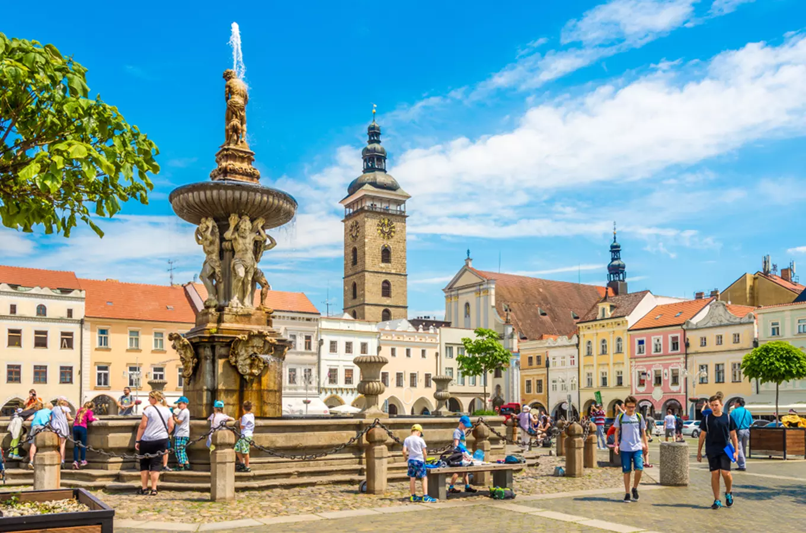
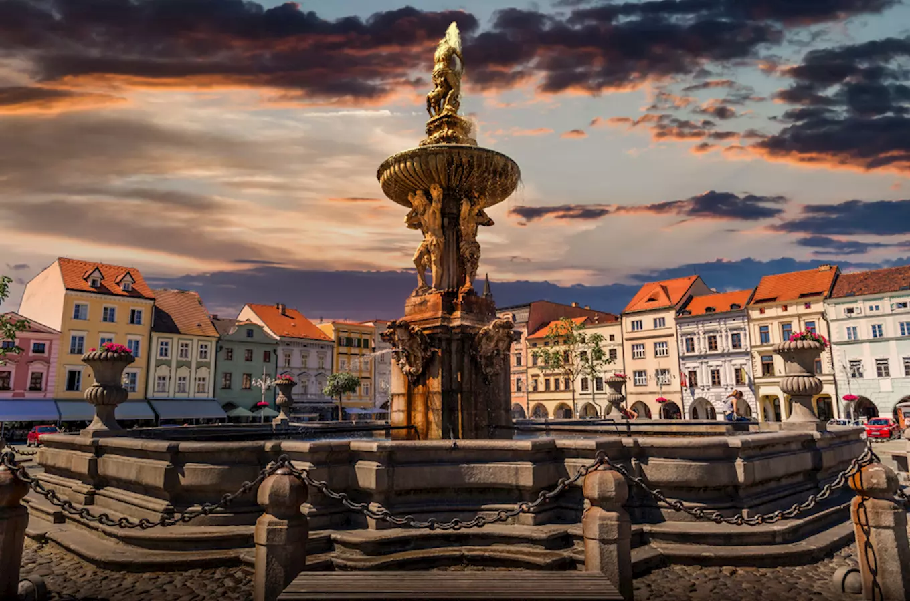
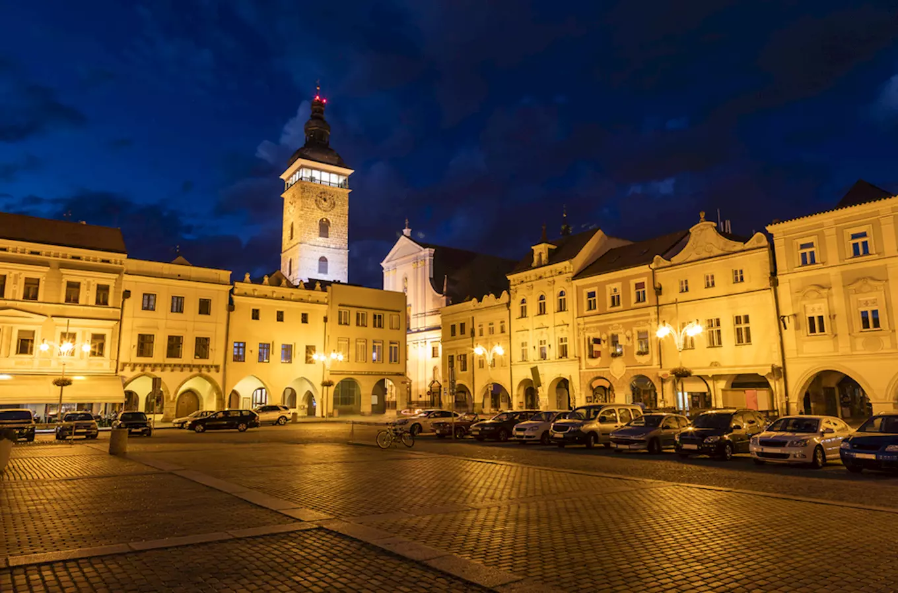

Discover a historic South Bohemian city known for its grand main square, beautiful architecture and famous Samson's Fountain.
České Budějovice is a historic city in South Bohemia, founded by King Ottokar II of Bohemia in 1265. Thanks to its location along important trade routes, the city became a significant centre of commerce and culture.
Today, the city is famous for its large central sqaure, historic buildings and brewing tradition. It is also a popular starting point for exploring the South Bohemian countryside and nearby historic towns.
South Bohemian Region
Czechia
Historic square and brewing tradition
Southern Czechia
Přemysl Otakar II Square is the historic heart of České Budějovice. Founded in the 13th century, it is one of the largest town sqaures in Czechia and is surrounded by colourful historic buildings with elegant arcades.
The square is a lively meeting place for locals and visitors. Its impressive architecture, cafés and open spaces make it an ideal starting point for exploring the history city centre.

Samson's Fountian is one of the most recognizable landmarks in České Budějovice. Built in the 18th century, it features a large stone basin and a sculptural group depicting the biblical hero Samson fighting a lion.
The fountain was crated as an important feature of the city'd water supply and later became a distinctive symbol of České Budějovice. Its detailed sculptures make it one of the highlights of the historic centre.

The Black Tower is a historic bell tower located near St. Nicholas Cathedral. Completed in the 16th century, it was built to serve as both a symbol of the city's wealth and a watchtower.
The tower rises above the surrounding rooftops and is one of the city's most distinctive landmarks. Visitors can climb to the viewing gallery and enjoy panoramic views of České Budějovice and the surrounfing South Bohemain landscape.

Approx. 97,000 residents
Approx. 56km²
1265
Vltava River